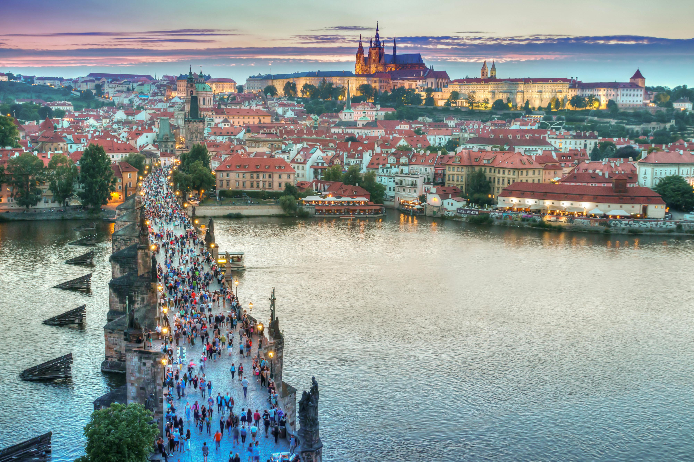

About
Здесь вы можете написать краткую биографию
Города, в которых я жила

Санкт-Петербург, Россия
Эрмитаж — один из крупнейших художественных музеев в мире: коллекция насчитывает свыше 3 миллионов экспонатов.

Прага, Чехия
Карлов мост заложен 9 июля 1357 года в 5:31 утра — знаменитая «палиндромная дата» должна была принести удачу; по легенде, в раствор добавляли яйца.
Ханчжоу, Китай
Озеро Сиху включено в список Всемирного наследия ЮНЕСКО. Легенда гласит, что это слеза дракона, оплакивающего утраченный жемчуг.
Будапешт, Венгрия
Цепной мост Сечени, открытый в 1849 году, стал первым постоянным мостом через Дунай и символически объединил Буду и Пешт.
Вена, Австрия
Красота Венской оперы. Здесь, в «столице музыки», каждый вечер оживает история — от Моцарта до Штрауса.